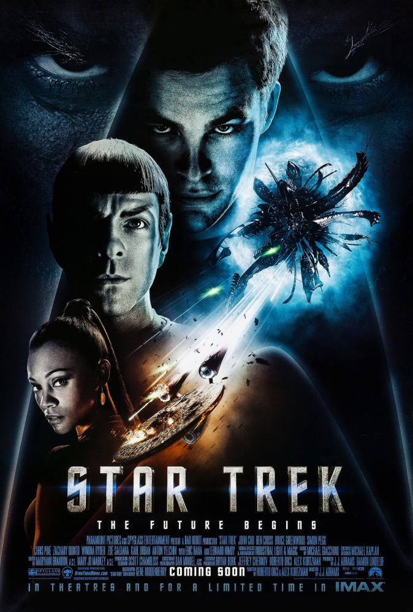

@c6reviews.
@c6reviews.Films
home
| Star Trek [2009] | |
|---|---|
|  | |
| Film number: | #11 |
| Release date: | May 8, 2009 |
| In-universe year: | Kelvin 2258 (primary) |
| Universe Timeline Go to full timeline ➡︎ | ||||
|---|---|---|---|---|
| Prime Timeline | ¦ | Kelvin Timeline | ||
| 2233 | James T. Kirk is born | ¦ | ❰❰ STAR TREK [2009] | Nero arrives from 2387 |
| 2234 | ¦ | ↑ | ||
| [20 intervening years] | ||||
| 2255 | ¦ | ↑ | ||
| 2256 | STAR TREK DISCOVERY (DIS) SEASONS 1 & 2 |
¦ | ↑ | |
| 2257 | ¦ | ↑ | ||
| 2258 | ¦ | STAR TREK [2009] | Spock arrives from 2387 | |
| 2259 | STAR TREK STRANGE NEW WORLDS (SNW) |
¦ | INTO DARKNESS | ↑ ↑ |
| 2260 | ¦ | 5-year mission begins | ↑ ↑ | |
| 2261 | ¦ | ↑ ↑ | ||
| 2262 | ¦ | ↑ ↑ | ||
| 2263 | ¦ | BEYOND | ↑ ↑ | |
| 2264 | ¦ | ↑ ↑ | ||
| 2265 | ¦ | ↑ ↑ | ||
| 2266 | ¦ | ↑ ↑ | ||
| 2267 | ¦ | ↑ ↑ | ||
| 2268 | ¦ | ↑ ↑ | ||
| 2269 | ¦ | ↑ ↑ | ||
| 2270 | ¦ | ↑ ↑ | ||
| 2271 | ¦ | ↑ ↑ | ||
| [112 intervening years] | ||||
| 2384 | ¦ | ↑ ↑ | ||
| 2385 | Rogue Synth Attack on Mars (April 5) | ¦ | ↑ ↑ | |
| 2386 | ¦ | ↑ ↑ | ||
| 2387 | Romulus Destroyed by Supernova | ➜ | Nero and Spock thrown back in time to 2233 and 2258 | |
| 2388 | ¦ | |||
 Star Trek [2009]
Star Trek [2009]
Star Trek [2009] is the eleventh Star Trek film, and it's the first of three films to take place in the so-called “Kelvin Timeline”. This is an alternate/separate timeline from the Trek that we know, which we'll call the “Prime Timeline”. In the year 2387 of the Prime Timeline (which comes after the events of TNG, DS9, VOY, Lower Decks, and Prodigy), the Romulan star goes supernova. Spock had attempted to prevent the crisis, but when he failed, his ship – and another ship piloted by a vengeful Romulan named Nero – are thrown over 100 years into the past. Nero's ship, the Narada, arrives first, in the year 2233. The USS Kelvin, carrying George Kirk and his pregnant wife, engages the Narada and is destroyed. George sacrifices himself so that his wife and newborn son, James, can make it out alive.
The arrival of the Narada and the destruction of the USS Kelvin are what set this alternate timeline in motion. The Kelvin Timeline is named after the destroyed Starfleet ship, but you may also hear these events referred to as “The Narada Incursion”. So, this alternate timeline explains why events don't unfold the way they did in the Prime Timeline. Here, the fates of Kirk, Spock, and the rest of the crew are very different from their Prime Timeline counterparts. The three films which take place in this timeline are all produced by J.J. Abrams, so this alternate timeline is also sometimes called the “Abramsverse”.
This film tells the story of a version of Kirk that grew up without a father, joining Starfleet in an attempt to get his life back together. In his third year at the academy, he must face the nemesis that was responsible for his father's death: Nero.
This film was meant to be a soft-reboot of the Star Trek franchise, and it takes place in an alternate timeline, so there is literally nothing in the Trek universe that you need to watch beforehand, because this is all entirely new material. This is the first of the Kelvin-timeline movies, and they can be enjoyed at any time in your Star Trek journey.
Two-sentence summary: Spock and a really angry Romulan named Nero are thrown back in time to 2258 and 2233, respectively, forever changing the timeline. A young, spunky Enterprise crew must defeat Nero.
Let me tell you just a little bit about my mindspace when this film first came out. This film was the first new thing to bear the Star Trek name since the series Star Trek: Enterprise wrapped four years prior. Enterprise was airing as I was transitioning from high school to college, so I had other things to worry about. Plus, Enterprise was so different from the TNG, DS9, and VOY that I was used to. So, for me, this film was more like the first new Trek since Star Trek Nemesis, six and a half years prior. After such a long break, you'd think I'd be thrilled for some new content, but I knew that this film was going to take place in an alternate timeline and that it was going to be newer, younger... hipper... so I wasn't really excited about it, at all. No, the Star Trek I grew up on was dead and gone, and I had become an adult since then, so it was time for me to grow up and move on.
Did I see it in theaters, anyway? Of course I did! And you know what? I rather enjoyed it! But my enjoyment came with the caveat that I didn't really believe that it was “true” Star Trek, since it was an entirely different timeline. Still, it was a lot of fun. There was action, comedy, space ships... lens flares. I was a little skeptical about Chris Pine, at first, but at one point he smiled in a semi-lecherous way and I thought, “Yep, that's Kirk.” And sure, it's fun to see our heroes in a different timeline so we can ask all the “what ifs?” about what would have happened if things had been just a little different. Also, this movie manages to cast and write for younger versions of all our heroes without resorting too much into a young-adult melodrama where no one can control their emotions or libidos. And then the movie ended, and I left the theater, and I moved on with my life.
Now that I have 15 years to look back on it, I can actually better appreciate what it was trying to do. It was probably exactly what the franchise needed at the time – a sci-fi space adventure, but still somehow a little more main stream and accessible to the general public. By placing it in an alternate timeline, they made it easy for people who weren't familiar with Star Trek to enjoy it, and they made it so long-time fans couldn't get too upset about any continuity failures. Still, there were some shortcomings. Specifically, the movie's desire to portray this Kirk as an undisciplined young man who frequently gets in trouble with the law because he didn't have a father growing up gets in the way of the need to have Kirk in the captain's chair where he belongs. And so a fantastic series of events must occur to fast-track him to that chair, to the point that it becomes unbelievable. Also, the villain needs a little work. He's a bit generic and a bit overly-angry without quite enough background. I get it, I'd be upset if Earth were blown up, but we don't get quite enough explanation for Nero's role. I think this could have been improved if they had spent a little more time in the mind-meld/flashback scene – if we could have seen Nero before the catastrophe, and somehow witnessed his transition from “average blue-collar man making an honest living” to “enraged and disturbed madman hellbent on seeking revenge on the one person who was trying to save the planet, but failed”.
- When Leonard McCoy sits next to Kirk in the shuttle, he says that his ex-wife took everything in the divorce and that “all I got left is my bones.” In the Prime Timeline, Kirk frequently called McCoy by his nickname, “Bones”, but this is the first time that we've heard of a possible explanation for how he got the name.
- The voice of the Enterprise computer is that of Majel Barrett, who was the voice of the computer on many other Starfleet ships in the Prime Timeline. I guess some things are the same no matter what timeline you're in!
- When Kirk asks the older Spock how he knew his name, he replies, “I have been, and always shall be, your friend.” These are the words that the Prime Timeline Spock spoke to Kirk in an emotional moment in Star Trek II: The Wrath of Khan.
- Scott says that he tested his transporter theories on “Admiral Archer's prize beagle”. He is, indeed, referring to Jonathan Archer from Star Trek: Enterprise. Archer would be well over 100 at this point, but humans in this era do live longer lifespans because of the advances in medical care.
- This film establishes Uhura's first name as Nyota. While it was discussed by both Nichelle Nichols (the original Uhura) and Gene Roddenberry, as well as being used in a 1982 book, this is the first canonical use of the name.
“Set lens flare to maximum, Mr. Sulu!”
👍 Opening Scene — Yeah, I would say that was an effectively emotional start to the film.
👎 Extremely Contrived Circumstances — Cadets Kirk, McCoy, and Uhura all had to get into positions of power for this movie to work, right? So Uhura ends up at the bridge communications station because they needed someone to discern the Romulan language from the Vulcan language, but the lieutenant she relieves never comes back. The ship's Chief Medical Officer is killed, and somehow McCoy becomes acting CMO because there were no other more-senior officers? He even wears commander's bars on his sleeves – that's quite a promotion! And Pike promotes Kirk to first officer because... well, the story wouldn't work otherwise!
👍 Casting — Chris Pine and Zachary Quinto fulfill their legendary roles of Kirk and Spock quite well.
🤷♂️ KIRK DANGLING FROM CLIFFS! — Cliff #1: A young Kirk dangles off a cliff after driving a sports car off the edge! Cliff #2: On the drill platform, a Romulan gets Kirk off balance, and now he's hanging off the edge! Cliff #3: In Nero's ship, where the interior is basically a platformer arcade game with no guard rails (apparently they don't have an OSHA equivalent on Romulus), Kirk jumps from one platform to another and misses, once again dangling off the edge!
👎 LENS FLARE! — This film was made fun of, quite frequently, for the overuse of lens flare. It is especially unbearable on the almost all-white Enterprise bridge that was apparently designed by Apple®.
🤷♂️ Nero — He's just a blue-collar worker earning an honest living who got really angry and stayed really angry. And he has an entire crew of really loyal people who just waited around with him for 25 years to help seek revenge on Spock. You'd think a lot of them might have just left and tried to pick up the pieces of their lives. As the primary antagonist, Nero needed more screen-time and backstory.
👍 Leonard Nimoy as Spock — Our only real tie to the Prime Timeline comes in the form of the original Spock, played by Leonard Nimoy. This is a great way to sort of reboot the story while giving it a strong connection to the original.
👎 Promoted to Captain! — The problem is that they wanted to establish THIS Kirk as a troubled youth, but by the end of the movie, they kind of needed him to be the new, permanent captain of the Enterprise. And so, after this disaster, the powers at Starfleet just promote Kirk from a cadet – someone who hasn't even graduated from the academy – past five officer ranks and straight to captain, and they just give him the Enterprise! Sorry, I can't forgive this, it's just too insane.
- So, Kirk can just take the Kobayashi Maru test three times because he wants to? Wasting not only the academy's time, but also the time of all the other cadets who apparently have to participate in the simulation with him?
- McCoy's ruse to get Kirk onto a ship while he's on academic suspension is stupid. A cadet telling an officer that he's transporting his patient? Nah, no way that would work.
- Speaking of which, the entire command structure of Starfleet seems really off here. All of these cadets are assigned to ships when they get a distress call? Are there no actual adult officers to take care of these sorts of things? McCoy asks the man loading the shuttle if he wants to explain to Captain Pike why his ship warped into a crisis without “one of its senior medical officers”. Wha...? McCoy isn't an officer, he's a cadet. And he's certainly not a senior officer. What is going on??
- Why did the Enterprise warp into the middle of a debris field? With all the warning they had, couldn't they have come out of warp, I dunno, a second or two earlier?
- Obviously, whatever Chekov did when beaming up Kirk and Sulu who were plummeting toward the planet's surface, did not conserve their downward velocity... otherwise, they would have splattered onto the transporter pad and died, just as if they had hit the planet's surface. So, this isn't really a nitpick... it just needed to be pointed out.
- It’s implied that Nero got some sort of security codes from Pike but, how does that just give him carte blanche to do whatever he wants in orbit of Earth? Are there really no defenses around? Did they just let him do what he wants because he “had the right code”?
- “Is the parking brake on?” — Pike, when the Enterprise fails to go to warp speed.
- “I am not our father.” — Spock Prime, to Spock.
| My rating: | 7 | FINAL SCORE 7.6 |
|
| SF Debris rating: | 7 | ||
| Ex Astris Scientia rating: | 6 | ||
| Rotten Tomatoes “Tomatometer”: | 9.4 | ||
| Normalized IMDb rating: | 9.0 | ||
| Star Trek: Lens Flare |
Next movie
This is the first of three movies set in the Kelvin Timeline. Continue watching the story in Star Trek Into Darkness.